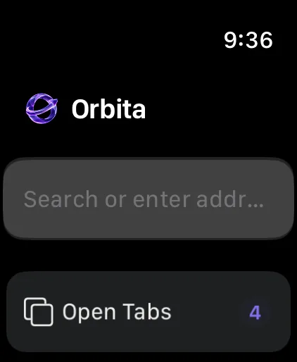
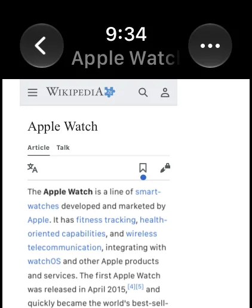
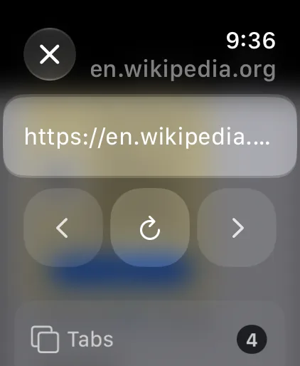
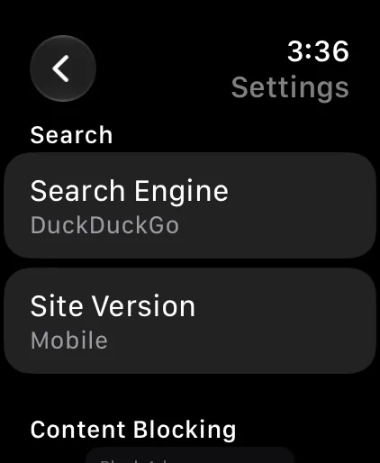
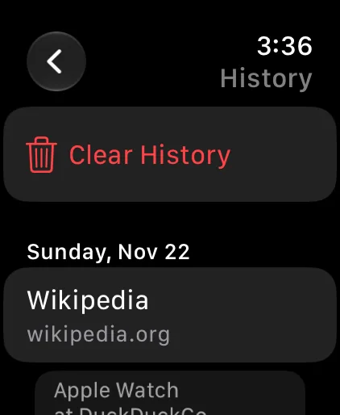

Press and creators
Press kit
Everything you need to write about or make a video of Orbita: fact sheet, description, icon and screenshots.
Fact sheet
- Title
- Orbita – Wrist Browser (shown as “Orbita” on the watch)
- Developer
- Luis Angel Caballero Jardón (independent)
- Based in
- Metepec, State of Mexico, Mexico
- Platforms
- Apple Watch (watchOS 10 or later), with a companion iPhone app (iOS 17 or later)
- Category
- Utilities · web browser
- Price
- Free. Optional tips in the iPhone app that don’t unlock features
- Languages
- 34: English plus 33 translations, including Spanish, Portuguese (Brazil and Portugal), French, German, Japanese, Korean and Chinese (Simplified and Traditional)
- Age rating
- 16+ (unrestricted web access)
- Store
- App Store
- Contact
- soporte.orbitabrowser@outlook.com
About Orbita
Orbita – Wrist Browser brings the full web to Apple Watch. Search, read and watch videos right from your wrist, without ads, without trackers and without reaching for your iPhone.
Ads, trackers and cookie notices are blocked inside the web engine before they download, so pages load faster and the battery lasts longer. Orbita finds the videos on each page and opens them in the watch’s native player: turn the Digital Crown to change the volume or skip through the video, and send the audio to AirPods or Bluetooth headphones.
Tabs stay open after you close the app, and unused tabs go to sleep to save memory. Search by voice with DuckDuckGo, Google, Bing or Ecosia. Bookmarks, history and tabs stay on the watch; there are no accounts, analytics or ads of its own. The iPhone app includes an 8-step guide and the optional tip jar.
Key points
- Built-in blocking of ads, trackers, cookie notices and pop-ups.
- Videos with the Digital Crown and audio to AirPods.
- Tabs, history and bookmarks, plus mobile, desktop or watch versions of sites.
- Private by design: no accounts, no tracking, Private Browsing.
- Built in SwiftUI by an independent Mexican developer.
Icon and logo


Screenshots







The .zip includes the raw Apple Watch screenshots (422 × 514) in English and Spanish.
Using these materials
You’re free to use these materials for reviews, articles and videos about Orbita. Please don’t alter the logo in a way that changes its meaning or suggest a sponsorship that doesn’t exist. If you need something that isn’t here, write to soporte.orbitabrowser@outlook.com.